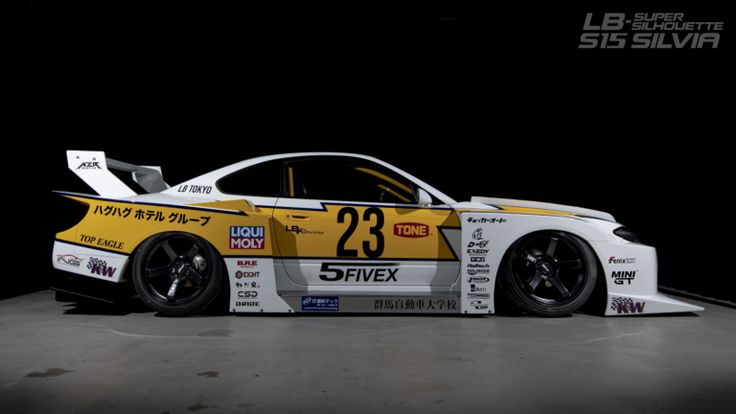

filter - blur

filter - brightness
filter - contrast
filter - saturate
filter - grayscale
filter - sepia
filter hue-rotate
filter - invert
filter - opacity
filter drop-shadow
filter yang digabungkan semua valuenya